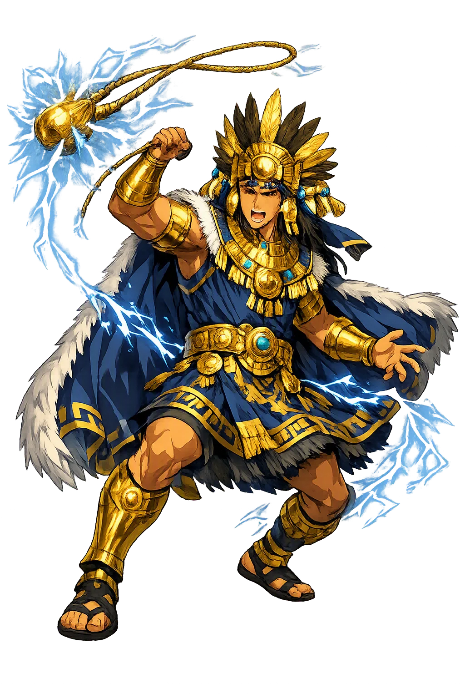
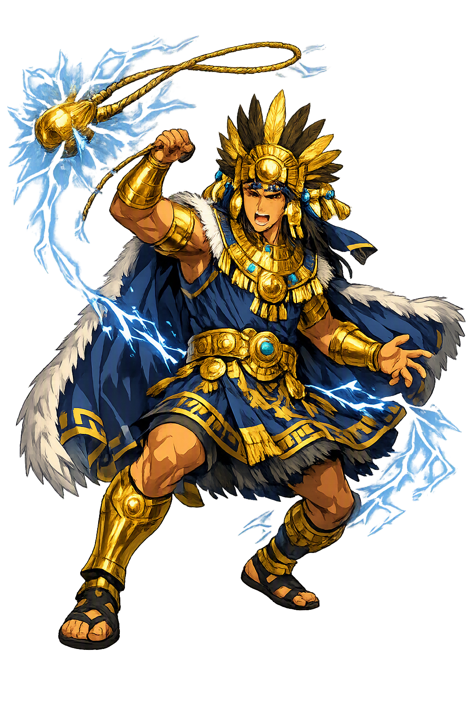

Stories of Illapa
Illapa's mythology comes to us almost entirely through colonial chroniclers writing after the conquest — Cobo, Polo de Ondegardo, Murúa — whose accounts agree on the god's person and differ on detail. What they preserve is a fully formed storm theology: a warrior in the sky with a household, a water supply, and weapons.
Bernabé Cobo (Historia del Nuevo Mundo, Book 13, c. 1653) describes Illapa as a man dressed in shining clothing, carrying a sling and a mace; when he whirls the sling, the flash of lightning leaps from him, and the crack of the stone's release is the thunder. Other chroniclers — Polo de Ondegardo in the 1550s, Martín de Murúa later — add that his temples and fields near Cuzco received the first chicha of the harvest. No pre-conquest narrative of his deeds survives; the Inca seem to have honored him through description and offering rather than epic. Polo adds that the thunderer's season opened when the Pleiades returned to the dawn sky — the whole agricultural year answered to his cue. The image nonetheless is complete:The image nonetheless is complete: the storm is a soldier on patrol, armed and fed by the people below.
Cobo records that Illapa kept his kinswomen — his sisters — in the sky as constellations, and that when the earth needed rain he drew water from the celestial river, the Milky Way, and slung it down. Urton stresses that this celestial economy still orders Quechua weather talk: streams in the sky are watched filling as the rains approach, and the dark cloud-constellations are read as the very animals of the old star lore. The astral geography of the Andes is precise:The astral geography of the Andes is precise: dark-cloud constellations (the fox, the llama, the toad) drink from the Mayu's stream, and modern Quechua speakers still read weather in their positions (Urton, Inca Myths, 1999). Whether or not every detail is pre-Hispanic, the theology is coherent: rain is a family business — a brother in the sky working a reservoir kept by his sisters.
Across the Andes, farmers treasure piedras de rayo — ancient stone tools or carved stones believed to be the spent sling-stones of Illapa. Fields struck by lightning became places of offering; cairns (apachetas) rose along the empire's roads at every pass, each a small embassy to the sky. Polo de Ondegardo, reporting on the cult in the 1550s, noted that the thunder was worshiped with these stone relics and that people exposed themselves to storms to plead for rain. The chroniclers professed scandal that stone and storm could be adored, yet the logic is practical: on a road system crossing passes above four thousand meters, the sky's moods were the empire's true weather service. Ethnography shows the practice unbroken into the twentieth century.Ethnography shows the practice unbroken into the twentieth century. The myth survives in matter, not manuscript: every kept thunderstone is a sentence of the story, recited by hand.
The rainbow, K'uychi, belonged to Illapa's terrible aspect. Chroniclers report that it was held to be an ill omen — a two-headed serpent drinking from springs — and that people hid or made noise to drive it off; Cobo classed it among the signs read in the sky alongside eclipses and comets. In the dry season the appearance of a rainbow over a village could empty its plaza. Its double head was the particular terror — one end drinking, one end watching — and anyone who handled the ground beneath it risked sickness; villages kept elders who claimed to remember the counter-charms. Here the storm god shows his Janus face:Here the storm god shows his Janus face: the same sky that waters the maize also arches a warning over the roofs, and Andean piety kept room for both.
Thunder
Illapa is the Inca god of thunder, lightning, and war — the storm warrior whose sling-stones are the thunderbolts. He drew the rain from the celestial river and hurled it earthward, patron of soldiers and of every field that waited for rain.
Armed with sling and mace, bright-clothed, he walks the sky; his flashing forehead is the lightning.
He draws water from the Milky Way's celestial river and releases it as the storms that fill the fields.
The war god of the empire; captives and maize beer were poured to him before battle.
A lightning strike read the future: ground hit by his bolt became a shrine, and his rainbow was feared.
From the original script to the living URL
Illapa
The name survives in scholarly transliteration. Illapa is the standard Incan romanisation, documented in academic sources — “Thunder”. Because the spelling uses only Latin letters, the form is the same in both ASCII and Unicode.
No indigenous writing system is securely attested for individual incan names. The form shown is a modern scholarly transliteration.
illapa
The plain illapa form is identical to the Unicode restoration. Because this name is already written in Latin letters, no diacritics, stress, or script information were lost — only capitalization differs.
Illapa
The Unicode restoration does not need to recover lost marks for Illapa. Its value is canonical spelling and consistent cataloguing, not the reconstruction of erased orthography. The domain is readable as-is to both DNS and humanity.
Illapa.com
This restoration is written entirely in ASCII letters — no Punycode encoding stands between Illapa and the DNS. The domain reads identically to machines and to human eyes.
Owned, ideal, and ASCII forms of Illapa
Illapa
The full Unicode restoration. illapa.com is not in the PuniCodex collection — it is watched for release; if it drops, this temple upgrades to an owned flagship.
How Illapa was spoken
How Illapa is preserved in writing
No indigenous writing system is securely attested for individual incan names. The form shown is a modern scholarly transliteration.
Contribute scholarly provenance →Illapa teaches that a storm is an armed presence, not a process. The Andes live under skies that can kill a herder or save a valley in an afternoon; the Inca response was to give that volatility a person, a sling, and a supply line. There is a political reading here — the storm god is also the war god, and the empire that fed him captives and chicha was an empire that understood force as weather: overwhelming, directional, and answerable to ritual. But there is a homelier lesson too. The thunderstone kept in a farmhouse, the cairn at the pass, the child taught to count the gap between flash and crack — these are technologies of relationship with a dangerous sky. Where other traditions explained thunder as noise, the Quechua tradition gave it aim — and therefore something one could address, placate, and occasionally petition for rain.
Enter Extended Lore